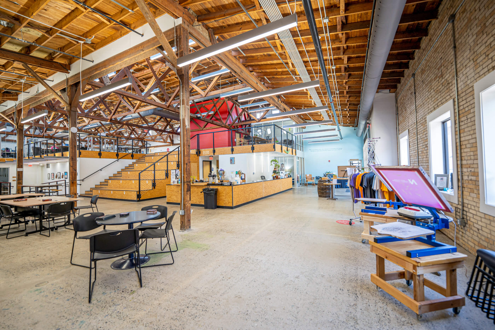

The identity and integrity of the Arkansas Regional Innovation Hub is integral to our ability to attract, develop, and retain the many talented and creative individuals who make up our community.
To that end, we provide this detailed style guide so that all official Hub materials reflect the professional, welcoming, and industrious space that we work so hard to create.
Each section will cover a different aspect of our house style.
You can jump to each section using the shortcuts below in the Table of Contents.
Official Style Guide
Introduction
Table of Contents

Terminology
Typography
Logo
Color
Voice
Photos
Abbreviations
Terminology
Here at the Innovation Hub, we use some terms which not everyone may be familiar with. However, they are an important part of our vocabulary. These terms should be well understood when writing official materials for the Hub so that we maintain a consistent professional voice.
Makers & Maker Spaces
A Maker is any person who is engaged in any of the wide variety of creative arts represented at the Hub. Some of these disciplines include:
- Ceramics
- Screen Printing
- Carpentry and Woodworking
- Metalworking
- Printmaking
- Electronics Prototyping
Similarly, “Maker Spaces” serves as a generic term to encompass all of the various spaces in which makers operate. Additionally, it should be understood that these are cooperative, shared spaces in which mutual learning and growth are prioritized. When speaking about the various spaces at the Hub generally, it is appropriate to use the terms “makers” and “maker spaces”, however when speaking about a more specific space, one should refer to that space by its intended function.
STEAM
STEAM is an acronym for Science, Technology, Engineering, Art, and Math. It is an extension of the acronym STEM which some people may be more familiar with. These subjects encompass the primary focal points of our many classes and workshops. This term is often used in connection with our educational programs and student outreach programs.
Typography
For a general-purpose font, use Lato or Open Sans. These are also appropriate for smaller subsection headings and labels. These are also suitable for both print and online materials, so if you ever unsure what font to use, these are a safe bet.
Lato
ABCDEFGHIJKLMNOPQRSTUVWXYZ
abcdefghijklmnopqrstuvwxyz
For larger headings and text which is being placed over a background image, use Oswald. In such cases, Oswald provides a bolder, clearer look against complex backgrounds. These headings should always be in all-caps (no lowercase letters).
Oswald
ABCDEFGHIJKLMNOPQRSTUVWXYZ
abcdefghijklmnopqrstuvwxyz
When placing text over images, use a white text color with a faded background shadow effect. This will provide a subtle outline to the text which will make it easy to read against any background image.